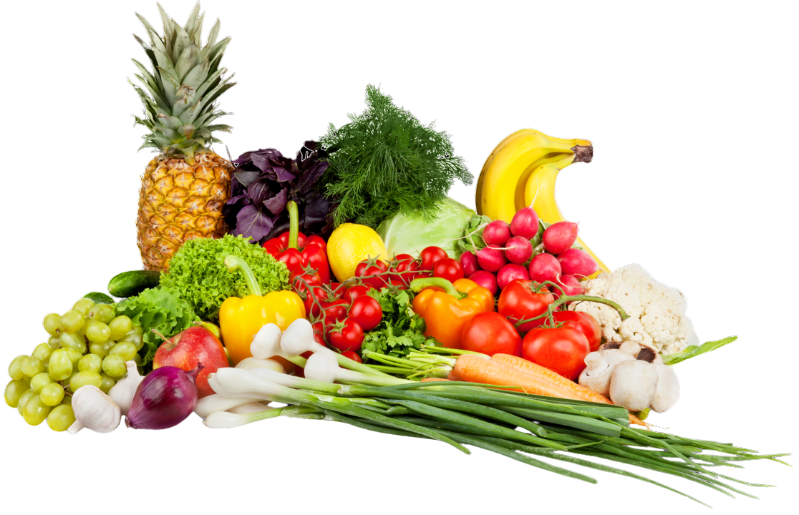

NỀN TẢNG HỒ SƠ SỐ NÔNG SẢN
MỖI NÔNG SẢN.
MỘT DANH TÍNH SỐ.
Số hóa quy trình canh tác, chuỗi cung ứng và kiểm định chất lượng thành hồ sơ số minh bạch, giúp nông sản Việt tự tin vươn xa.
Chuỗi khối an toàn • Mã QR định danh • Dữ liệu bất biến
